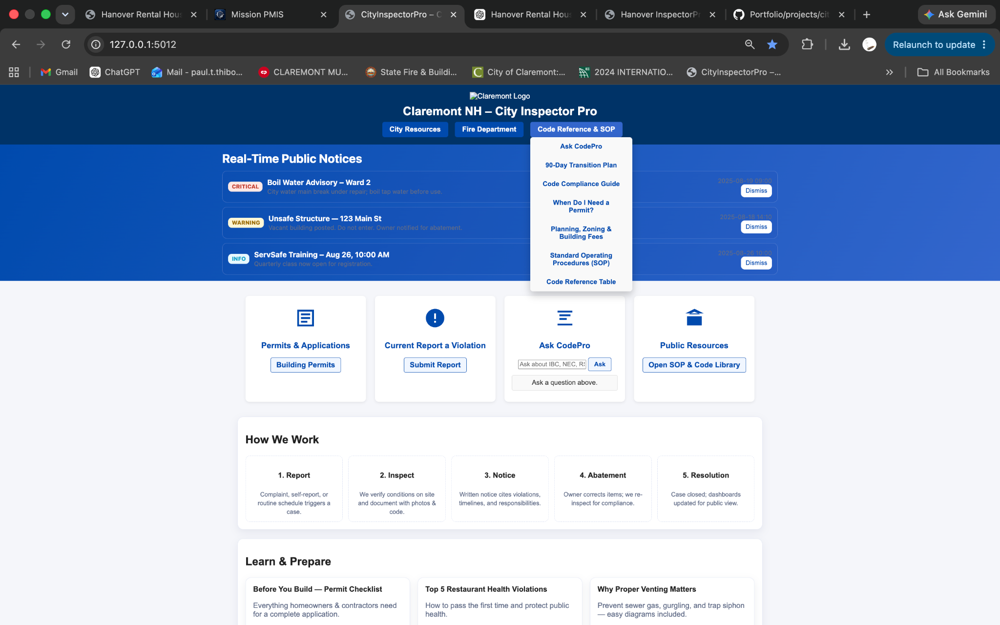
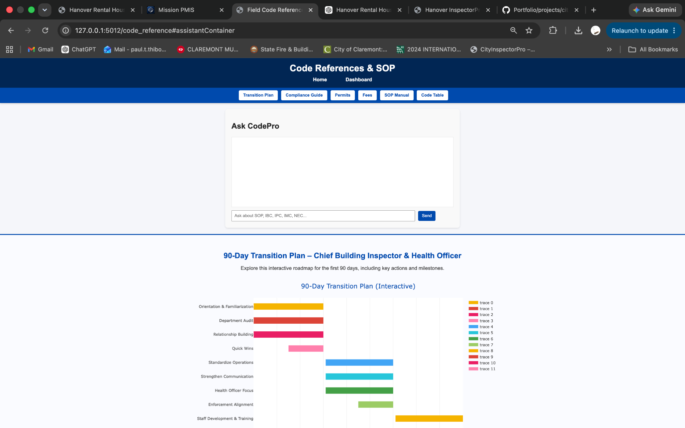
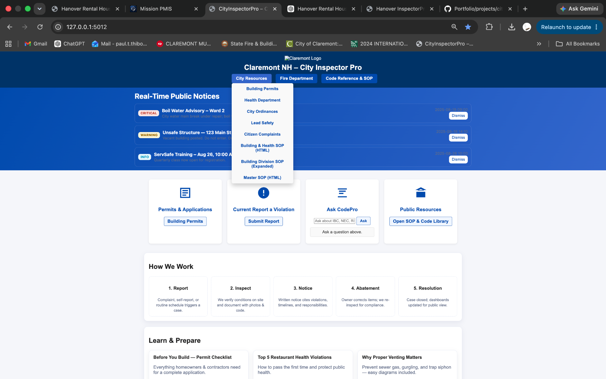
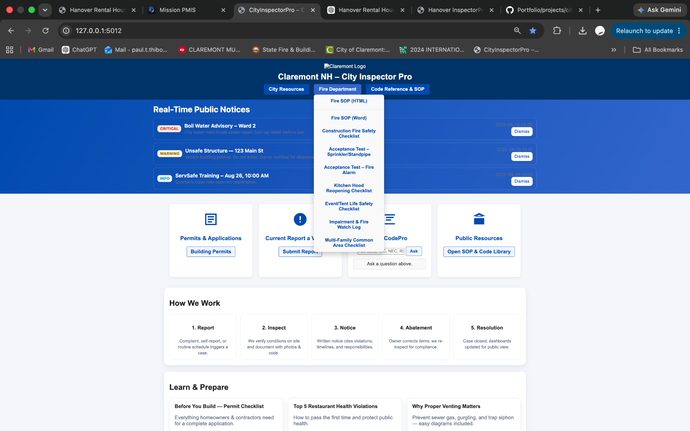
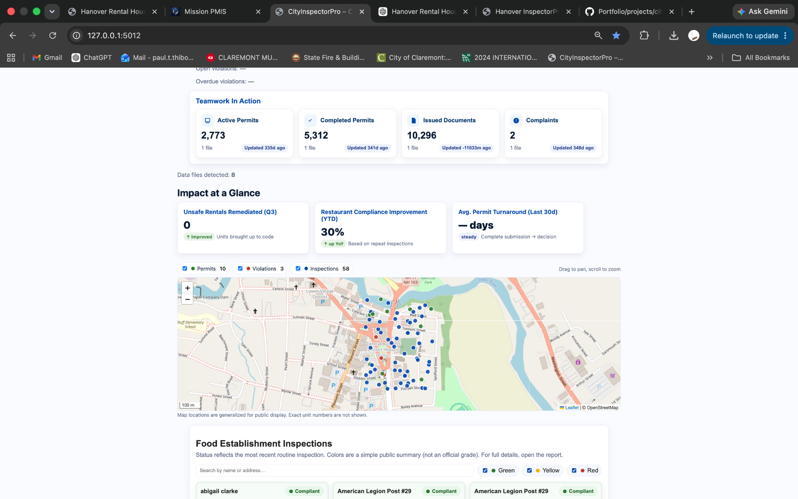
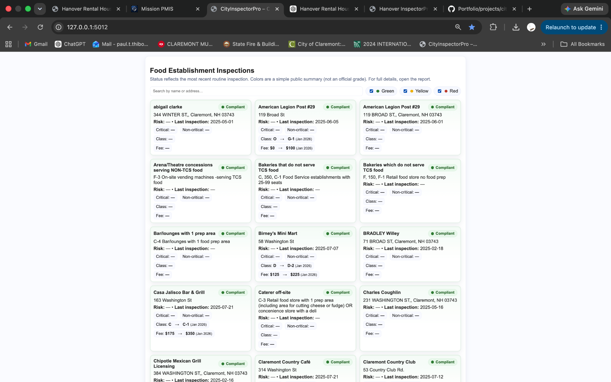
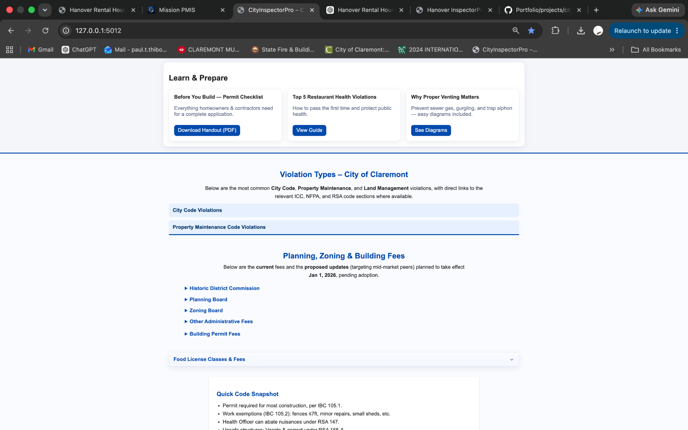
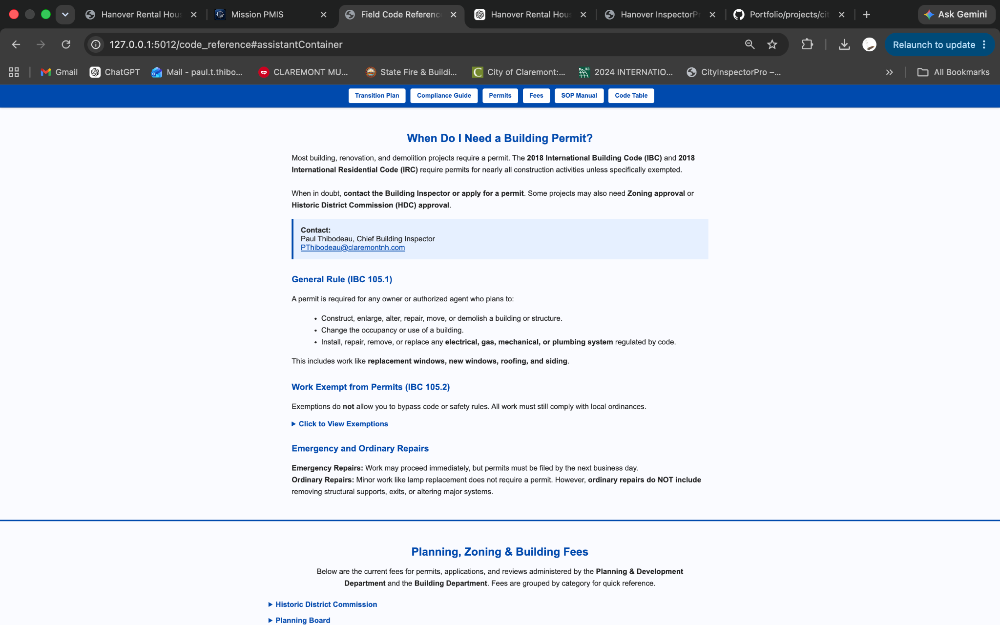

Civic Operations Platform
City InspectorPro
A full-stack municipal operations platform designed to support inspectors, department leadership, and the public through one integrated application. City InspectorPro brings permitting, complaints, inspections, public health, GIS mapping, code references, SOPs, public resources, dashboards, and AI-assisted support into a unified operating environment.

Project Overview
An entire municipal inspection operation brought into one system.
City InspectorPro was designed around a real operational problem: municipal information and procedures are often distributed across permit exports, complaint records, inspection files, facility lists, issued documents, maps, code books, SOPs, and individual staff knowledge. The platform reframes those materials as connected parts of one operating environment rather than unrelated files.
The Challenge
Replace fragmented tools with a coherent operating environment.
Inspectors and administrators work across active and completed permit records, complaint files, issued documents, facility lists, inspection schedules, map locations, adopted codes, departmental procedures, and reporting obligations. Each source may be useful on its own, but fragmentation makes the operation harder to understand and manage.
The design challenge was not simply to build another dashboard. It was to create an application architecture capable of connecting operations, knowledge, public information, and decision support.
The Application
A working full-stack architecture.
City InspectorPro includes a Python Flask application, modular routes and reporting components, a persistent SQLite database, structured operational datasets, local visualization assets, mapping support, inspection workflows, downloadable resources, and integrated code and SOP libraries.
Platform Walkthrough
The application itself demonstrates the architecture.
01 · Public Operations Portal
One front door for city services and operational information.
Real-time notices, permits, complaint reporting, AI-assisted code support, public resources, departmental links, and process guidance are presented through one accessible interface.

02 · CodePro AI
AI assistance embedded directly into the municipal workflow.
CodePro provides an interface for asking questions about SOPs, building codes, permits, mechanical requirements, and departmental procedures without separating the assistant from the operational system.

03 · Dashboard & GIS
Operational data made visible geographically and at a glance.
Permit, complaint, inspection, and issued-document counts are combined with impact metrics and an interactive municipal map to support field awareness, planning, and leadership reporting.

04 · Public Health Inspections
Compliance records designed for rapid review.
Food establishment cards communicate current status, risk, last inspection, critical and non-critical findings, classification, and fee information in a searchable public-facing view.

05 · Public Education
Help citizens prepare before they submit, build, or open.
Permit checklists, health guidance, plumbing and venting information, common violation references, fee schedules, and code summaries reduce uncertainty and improve the quality of public submissions.

06 · Code & SOP Library
Institutional knowledge converted into usable operating tools.
Building, residential, fire, electrical, mechanical, plumbing, health, OSHA, accessibility, and municipal references are organized alongside SOP chapters, guides, and direct source links.

07 · Transition Planning
Leadership planning integrated into the operating platform.
The 90-day transition plan turns onboarding, department audit, relationship building, quick wins, standardization, communication, enforcement alignment, and staff development into an interactive roadmap.

08 · Permit Guidance
Code requirements translated into clear public instructions.
Permit requirements, exemptions, emergency work, ordinary repairs, contacts, and related approval considerations are presented in a practical format for residents and contractors.

09 · Department Resource System
Operational references remain available at the point of work.
City resources, fire department procedures, checklists, testing forms, SOPs, public guidance, and code tools are organized through role-based menus instead of scattered folders and bookmarks.
Application Architecture
Software, data, knowledge, and public service working together.
Application Engine
Python and Flask provide routing, server-side logic, templates, and modular application structure.
Persistence Layer
SQLite supports application records and database-backed workflows.
Operational Data
Permit, complaint, issued-document, facility, health, and mapping datasets are brought into one system.
GIS & Visualization
Leaflet, Plotly, geocoding support, maps, charts, and KPI modules communicate operational activity.
Knowledge System
Codes, SOPs, guides, forms, checklists, fee schedules, and transition plans are embedded in the application.
Public Experience
Residents and contractors can access notices, guidance, inspections, resources, and reporting tools.
Technology
A modular full-stack municipal application.
The project combines a server-side application, persistent database, structured operational data, interactive visualization, mapping, browser interfaces, and AI-assisted development.
Python
Flask
SQLite
HTML5
CSS3
JavaScript
Plotly
Leaflet
CSV
Excel
AI-Assisted Development
What This Demonstrates
Solutions engineering across the full problem.
Full-Stack Development
Designing and building the application from server-side architecture through the browser interface.
Data Integration
Structuring varied municipal datasets and making them useful within one operating environment.
Knowledge Architecture
Turning codes, SOPs, procedures, forms, and guidance into accessible operational resources.
GIS & Reporting
Using maps, KPIs, summaries, and visualizations to improve field and leadership awareness.
Municipal Operations
Designing around permitting, inspections, public health, complaints, enforcement, and public service.
AI Product Integration
Embedding an assistant within the application instead of treating AI as a separate demonstration.
Public Experience Design
Making complex departmental requirements easier for residents, businesses, and contractors to understand.
Rapid Product Development
Moving from operational need to a functioning full-stack application through iterative development.
Why It Matters
City InspectorPro demonstrates the ability to move beyond a front-end prototype into complete operational software. By combining municipal domain expertise with full-stack development, the platform transforms disconnected records, procedures, maps, public resources, and reporting tools into one usable system for inspectors, administrators, leadership, and the public.